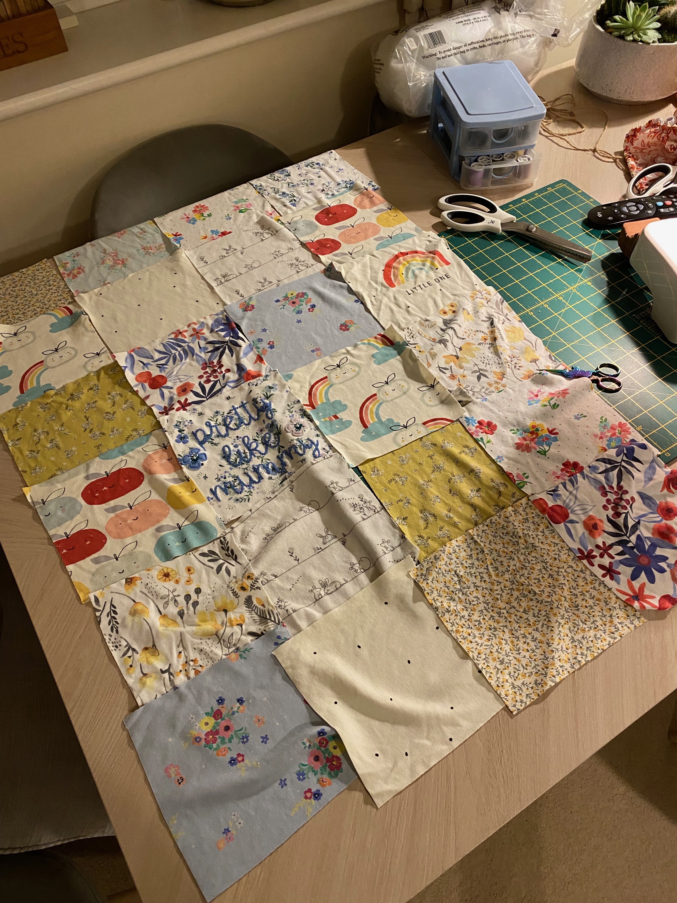
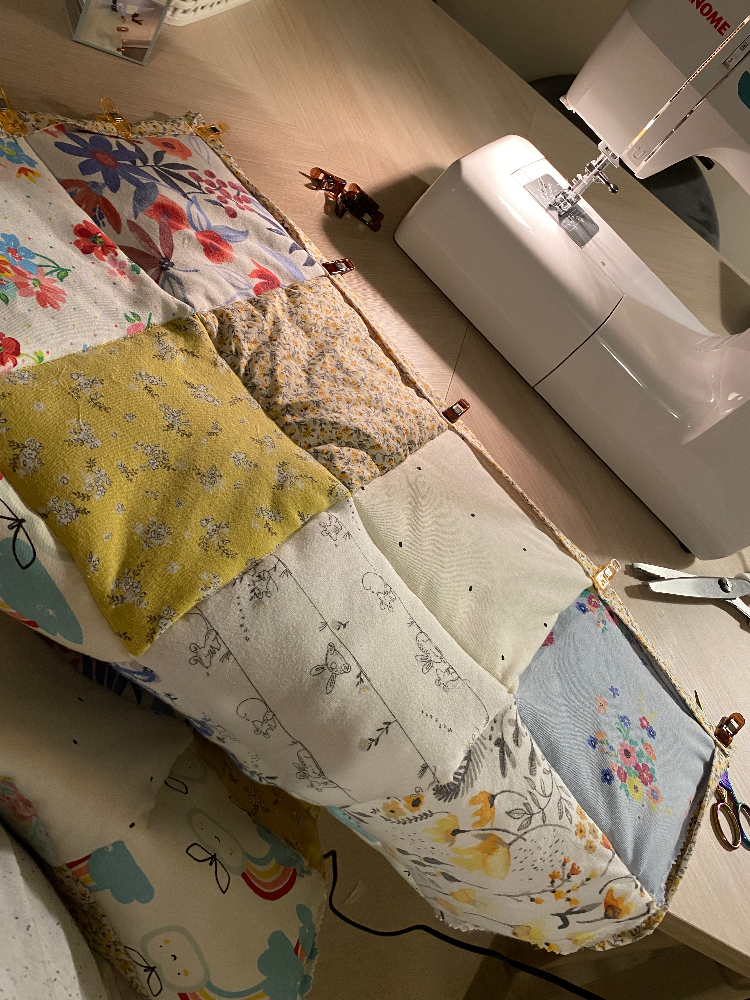
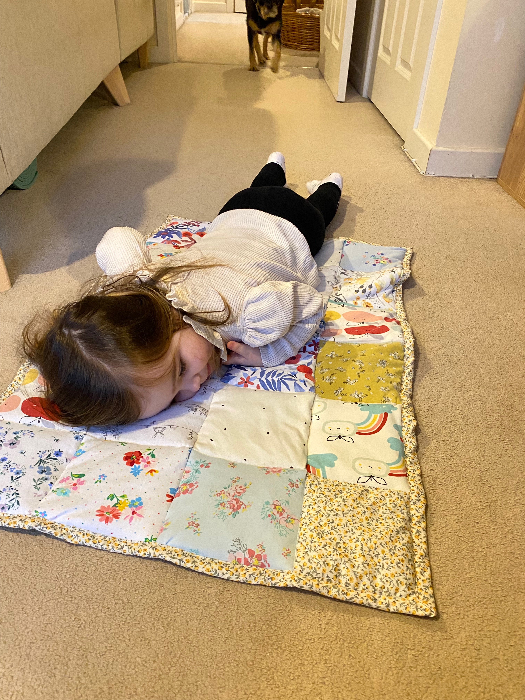
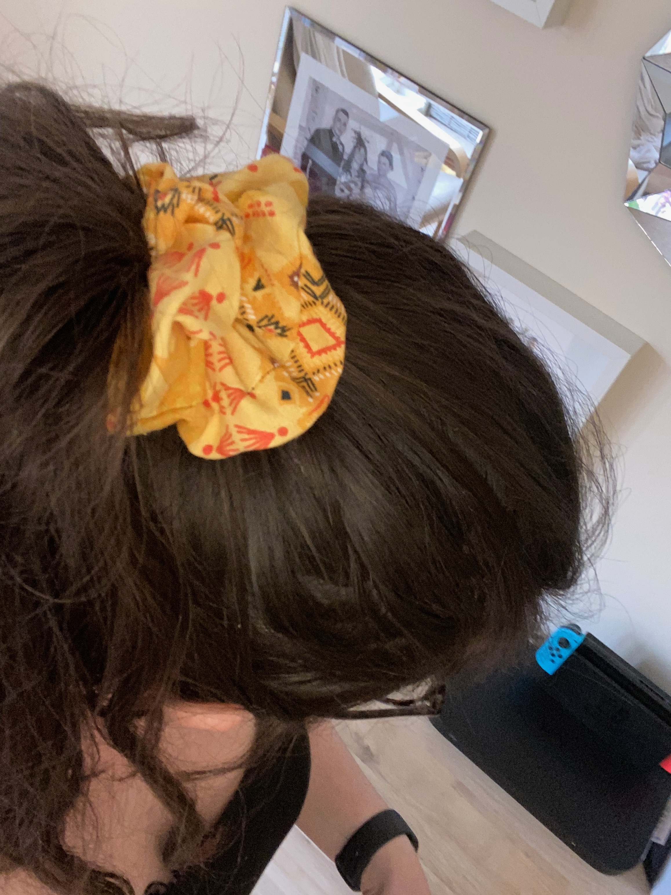
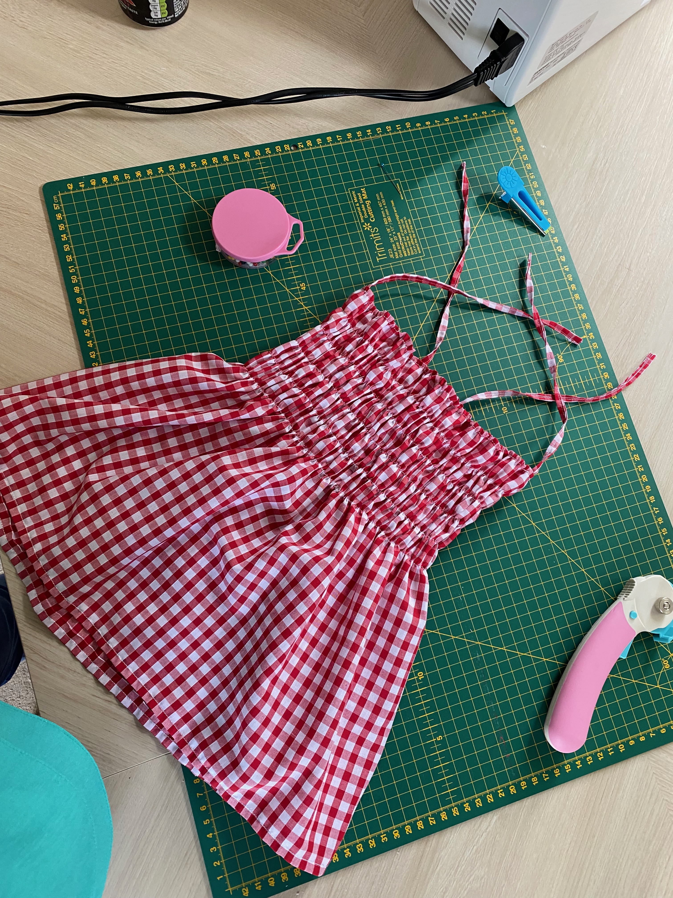
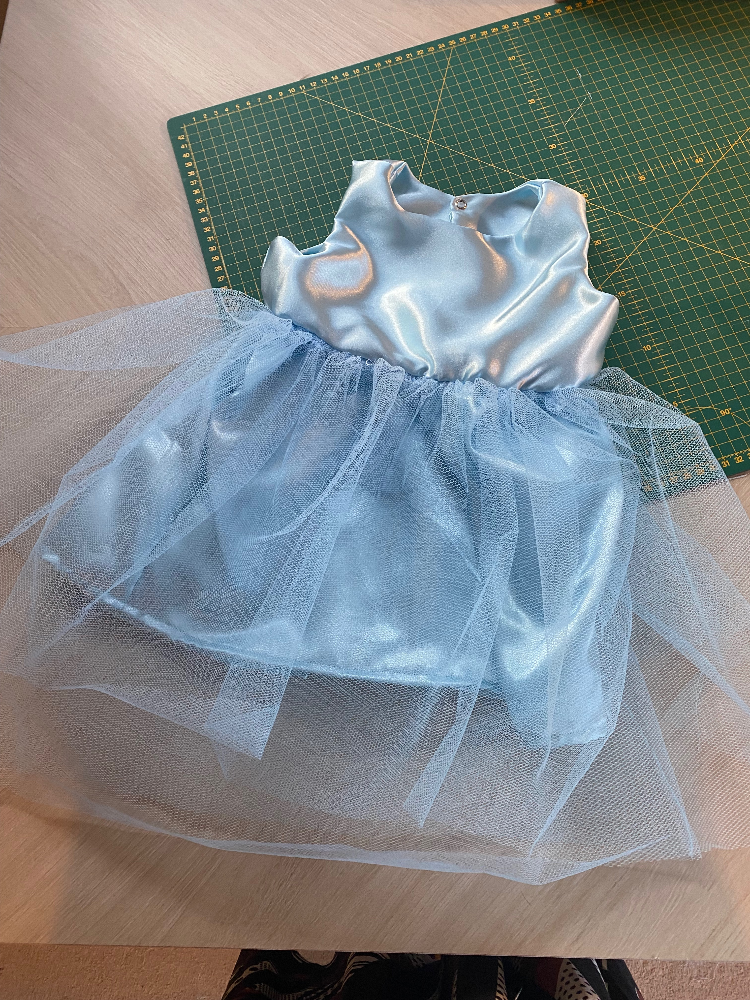

The idea
I'd never really sewn before, but I had a collection of my daughter's old baby clothes that I couldn't bring myself to get rid of.
Baby clothes are tiny, ridiculously cute and somehow manage to hold an incredible amount of memories. They also have a habit of sitting in a box because you don't quite know what else to do with them.
So I decided to turn them into something we could actually use.
A memory blanket seemed like the perfect project. It would give those clothes a new purpose while keeping all those little pieces of her early years together in one place.
And, as it turned out, it would also introduce me to something I really didn't expect to love: sewing.
My first sewing project
There was just one small problem.
I'd never made anything like this before.
I had to learn how to use the sewing machine, work out how to put everything together and generally figure out what I was doing as I went along.
The fabric itself added another layer of difficulty.

Some of the baby clothes were stretchy, while others were made from completely different types of fabric. Trying to get everything to behave itself while cutting, lining things up and sewing it together was definitely a learning experience.
In hindsight, perhaps starting with lots of different stretchy fabrics wasn't the easiest introduction to sewing.
But it worked.
Eventually.
The sentimental part
Using my daughter's old baby clothes made this project particularly special.
Each piece of fabric came from something she had actually worn, so the finished blanket became much more than just a sewing project.
There are little reminders of different stages of her childhood throughout it, all stitched together into one thing that we can keep.
That's probably my favourite part of the whole project.
Instead of those clothes sitting forgotten in a box, they became something we could actually see and use.
What I learned
The blanket taught me a lot about sewing, but it also taught me that I really enjoy making things with my hands.
There was something incredibly satisfying about starting with a pile of old clothes and gradually turning them into something completely new.


It wasn't perfect, and there were definitely moments where I wondered whether I'd made a terrible decision by choosing this as my first project.
But finishing it was a brilliant feeling.
More importantly, it made me want to keep sewing.
And then I kept sewing...
Since making the blanket, I've gone from one slightly ambitious sewing project to making all sorts of things.
I've made everything from scrunchies to dresses, which is quite a leap from someone who had never really sewn before.

And the thing I probably use the most?
A peg bag.
Of all the things I could have made, the humble peg bag has turned out to be the real star.
It's not the most glamorous project, but it's genuinely useful - which might be one of my favourite things about making things myself.


The next challenge
There is, however, one part of sewing that I still consider an advanced technical skill.
Threading the needle.
The actual tiny little needle.
Apparently, my eyesight would like to make this particular task significantly more difficult than it needs to be.
So I'm now looking forward to getting a new sewing machine with a self-threading needle.
Because after progressing from baby clothes to dresses, I feel like I've earned the right to outsource the hardest part. If my sewing skills have improves, so should my machine, right?
Looking back
The memory blanket was my first sewing project, but it ended up being much more than that.
It introduced me to a whole new world of fabric, patterns, making and creativity - and, unexpectedly, a hobby that I completely fell in love with.
I still have plenty to learn, and there will undoubtedly be plenty more projects that don't quite go according to plan.
But that's part of the fun.
The blanket started it all.
And now there is a growing pile of fabric, projects and ideas waiting for me to figure out how to make them.